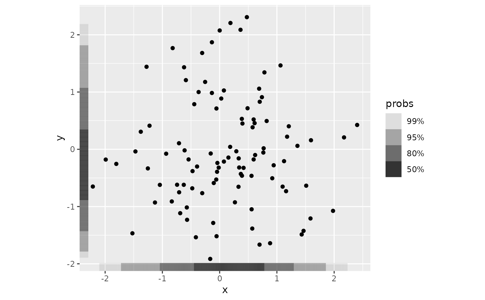
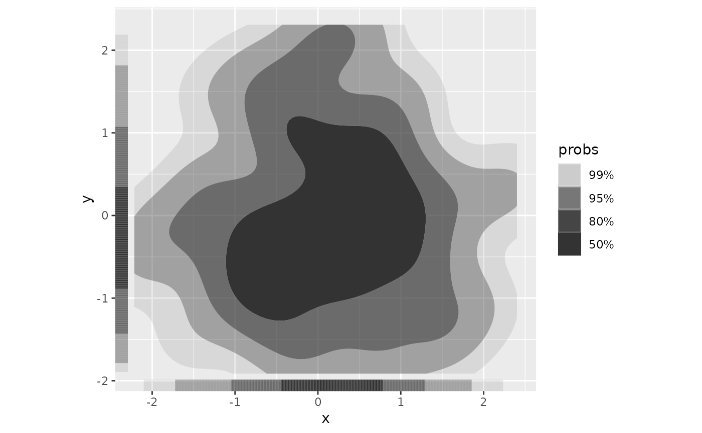
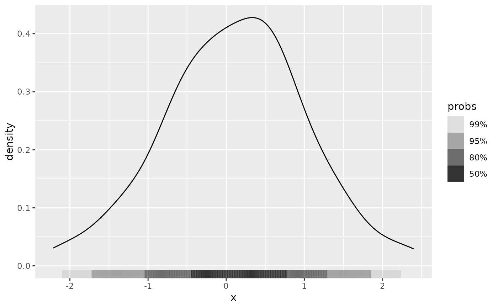
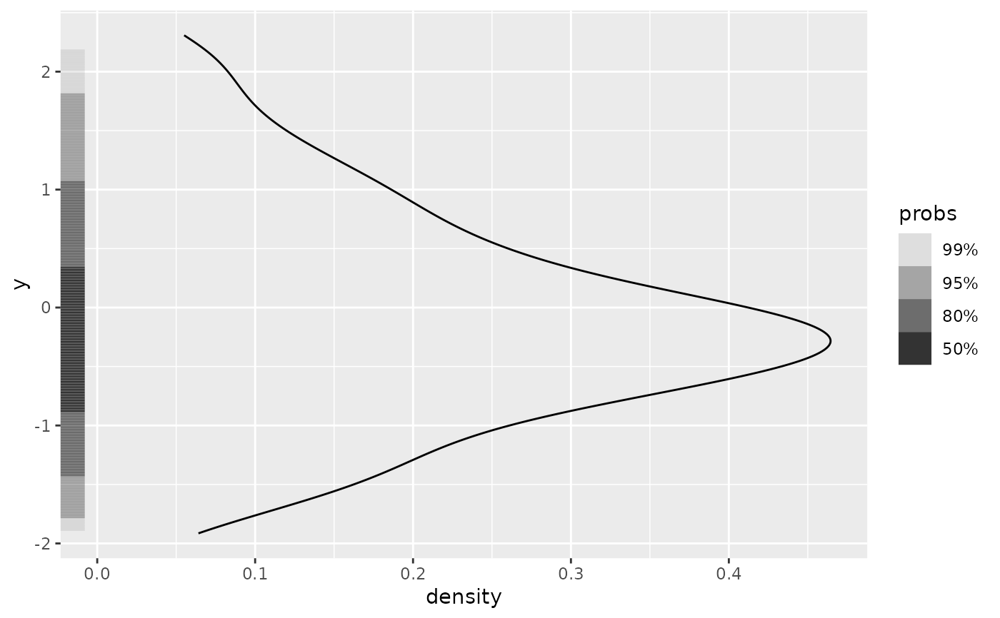
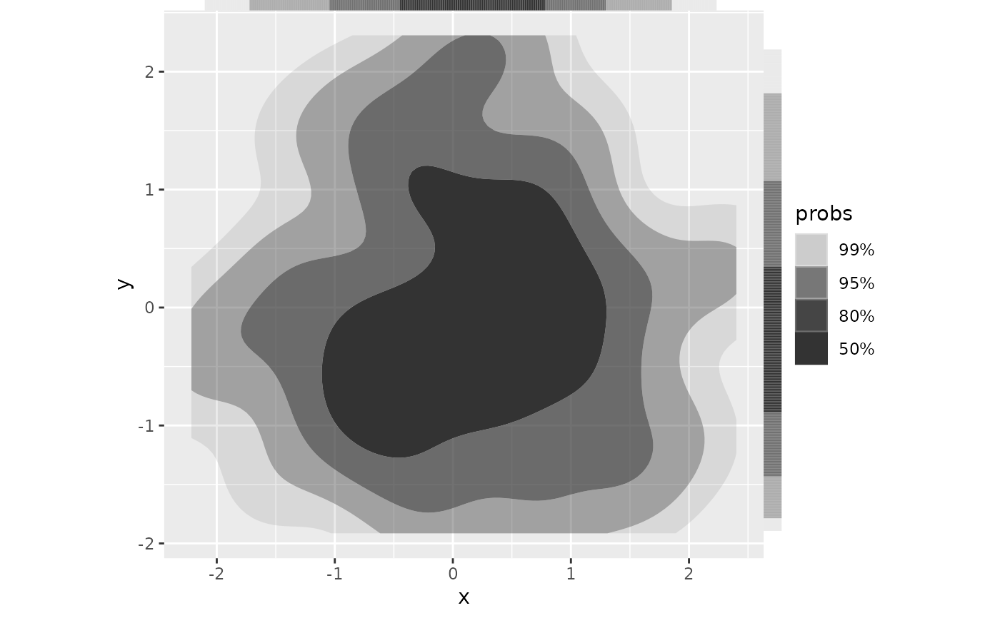
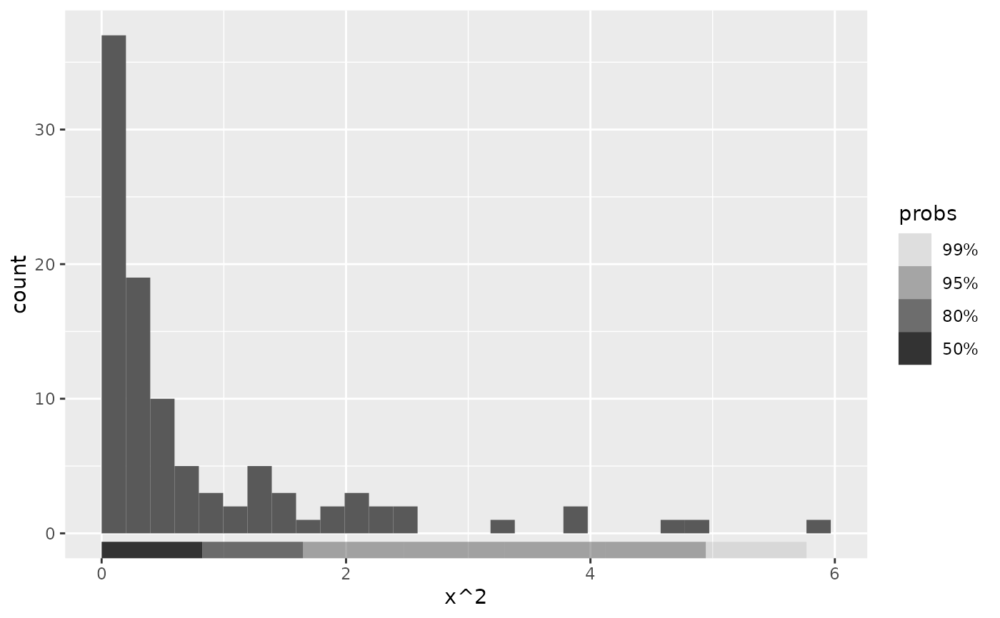
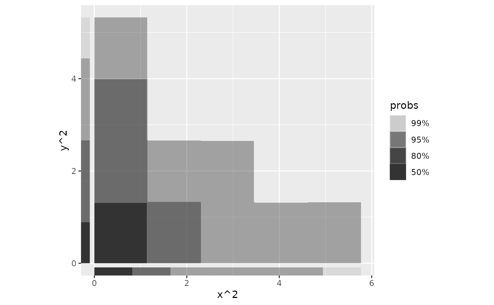

Perform 1D density estimation, compute and plot the resulting highest density
regions in a way similar to ggplot2::geom_rug().
Note, the plotted objects have probabilities mapped to the alpha aesthetic by default.
Usage
stat_hdr_rug(
mapping = NULL,
data = NULL,
geom = "hdr_rug",
position = "identity",
...,
method = "kde",
method_y = "kde",
probs = c(0.99, 0.95, 0.8, 0.5),
xlim = NULL,
ylim = NULL,
n = 512,
na.rm = FALSE,
show.legend = TRUE,
inherit.aes = TRUE
)
geom_hdr_rug(
mapping = NULL,
data = NULL,
stat = "hdr_rug",
position = "identity",
...,
outside = FALSE,
sides = "bl",
length = unit(0.03, "npc"),
na.rm = FALSE,
show.legend = TRUE,
inherit.aes = TRUE
)Arguments
- mapping
Set of aesthetic mappings created by
aes(). If specified andinherit.aes = TRUE(the default), it is combined with the default mapping at the top level of the plot. You must supplymappingif there is no plot mapping.- data
The data to be displayed in this layer. There are three options:
If
NULL, the default, the data is inherited from the plot data as specified in the call toggplot().A
data.frame, or other object, will override the plot data. All objects will be fortified to produce a data frame. Seefortify()for which variables will be created.A
functionwill be called with a single argument, the plot data. The return value must be adata.frame, and will be used as the layer data. Afunctioncan be created from aformula(e.g.~ head(.x, 10)).- geom
The geometric object to use to display the data, either as a
ggprotoGeomsubclass or as a string naming the geom stripped of thegeom_prefix (e.g."point"rather than"geom_point")- position
Position adjustment, either as a string naming the adjustment (e.g.
"jitter"to useposition_jitter), or the result of a call to a position adjustment function. Use the latter if you need to change the settings of the adjustment.- ...
Other arguments passed on to
layer(). These are often aesthetics, used to set an aesthetic to a fixed value, likecolour = "red"orsize = 3. They may also be parameters to the paired geom/stat.- method, method_y
Density estimator(s) to use. By default
methodis used for both x- and y-axis. If specified,method_ywill be used for y-axis. Accepts character vector:"kde","histogram","freqpoly", or"norm". Alternatively accepts functions which return closures corresponding to density estimates, see?get_hdr_1dorvignette("method", "ggdensity").- probs
Probabilities to compute highest density regions for.
- xlim, ylim
Range to compute and draw regions. If
NULL, defaults to range of data.- n
Resolution of grid defined by
xlimandylim. Ignored ifmethod = "histogram"ormethod = "freqpoly".- na.rm
If
FALSE, the default, missing values are removed with a warning. IfTRUE, missing values are silently removed.- show.legend
logical. Should this layer be included in the legends?
NA, the default, includes if any aesthetics are mapped.FALSEnever includes, andTRUEalways includes. It can also be a named logical vector to finely select the aesthetics to display.- inherit.aes
If
FALSE, overrides the default aesthetics, rather than combining with them. This is most useful for helper functions that define both data and aesthetics and shouldn't inherit behaviour from the default plot specification, e.g.borders().- stat
The statistical transformation to use on the data for this layer, either as a
ggprotoGeomsubclass or as a string naming the stat stripped of thestat_prefix (e.g."count"rather than"stat_count")- outside
logical that controls whether to move the rug tassels outside of the plot area. Default is off (FALSE). You will also need to use
coord_cartesian(clip = "off"). When set to TRUE, also consider changing the sides argument to "tr". See examples.- sides
A string that controls which sides of the plot the rugs appear on. It can be set to a string containing any of
"trbl", for top, right, bottom, and left.- length
A
grid::unit()object that sets the length of the rug lines. Use scale expansion to avoid overplotting of data.
Aesthetics
geom_hdr_rug understands the following aesthetics (required aesthetics are in bold):
x
y
alpha
fill
group
subgroup
Computed variables
- probs
The probability of the highest density region, specified by
probs, corresponding to each point.
Examples
set.seed(1)
df <- data.frame(x = rnorm(100), y = rnorm(100))
# Plot marginal HDRs for bivariate data
ggplot(df, aes(x, y)) +
geom_point() +
geom_hdr_rug() +
coord_fixed()

ggplot(df, aes(x, y)) +
geom_hdr() +
geom_hdr_rug() +
coord_fixed()

# Plot HDR for univariate data
ggplot(df, aes(x)) +
geom_density() +
geom_hdr_rug()

ggplot(df, aes(y = y)) +
geom_density() +
geom_hdr_rug()

# Specify location of marginal HDRs as in ggplot2::geom_rug()
ggplot(df, aes(x, y)) +
geom_hdr() +
geom_hdr_rug(sides = "tr", outside = TRUE) +
coord_fixed(clip = "off")

# Can use same methods of density estimation as geom_hdr().
# For data with constrained support, we suggest setting method = "histogram":
ggplot(df, aes(x^2)) +
geom_histogram(bins = 30, boundary = 0) +
geom_hdr_rug(method = "histogram")

ggplot(df, aes(x^2, y^2)) +
geom_hdr(method = "histogram") +
geom_hdr_rug(method = "histogram") +
coord_fixed()
